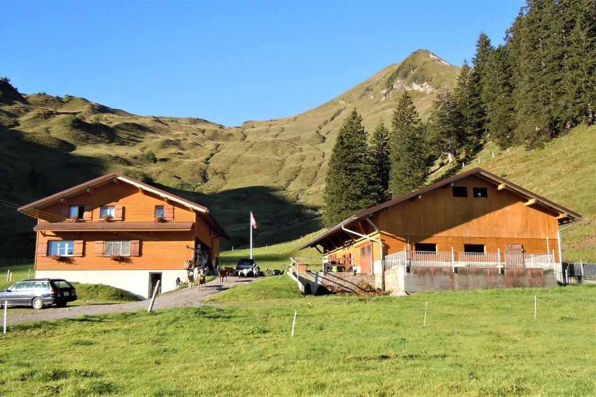
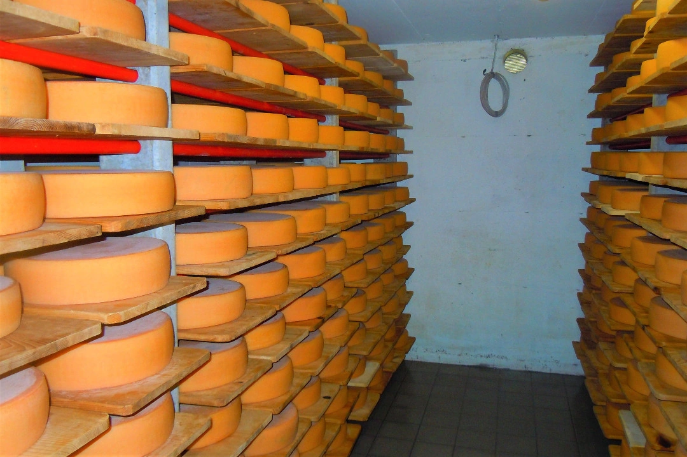
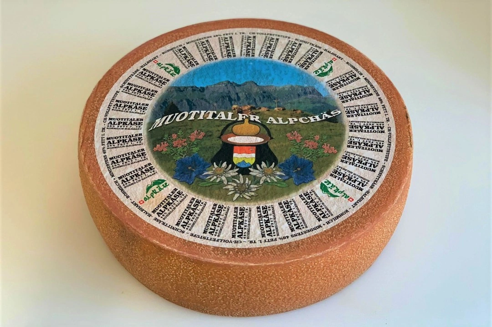
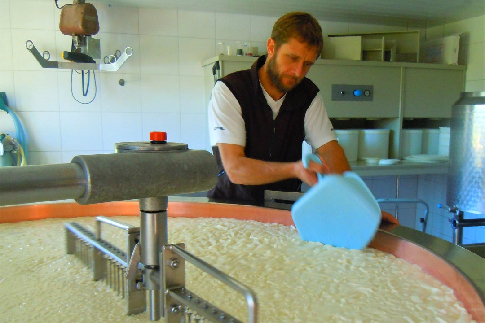
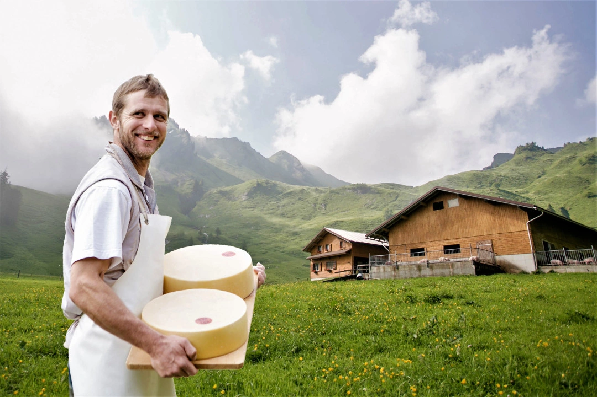

Muotitaler Alpchääs im Ried
Uf dr Alp Tröligen machid mier Chääs. Im Ried, i üsem Hoflädeli, chasch der s ganz Jaar sälber nä, was d bruuchsch.
Üse Chääs aluegä

Chumm inä!
Fürs Znacht äs Stück Alpchääs oder äs Mutschli? Im Lädeli chasch in Rueh usläsä.
Mier freuid üs uf di!
Marianne & Oskar Pfyl
Das gits bi üs im Lädeli

Alpchääs
Üse Alpchääs machid mier im Summär uf Tröligen. Im Tal undä gits en s ganz Jaar.
Lüüt üs aa
Mutschli & Raclette
Äs Mutschli fürs Plättli oder Raclette fürs Znacht. Wottsch wissä, welä Chääs mier grad hend?
Lüüt üs aa
Üsi Chääsärii
Uf Tröligen chäsid mier mid dr Milch vo üsnä Tier und vo dä Alpbetriib rundum. Im Lädeli gits au Joghurt und Ankä.
Lüüt üs aaIm Summär uf dr Alp
Im Summär sind d Chüeh und d Geissä uf Tröligen. Det obe chasch üse Chääs direkt uf dr Alp chaufä.
- Alpchääs
- Mutschli
- Raclette
- Geisschääs
s’Pfylä Hoflädeli
im Ried
Mier sind d Marianne und dr Oskar Pfyl. Zu üsem Hof Kapellmatt im Ried ghört d Alp Tröligen.
Vom Stoos här hesch öppe anderthalb Stund z Fuess bis uf Tröligen. I dr Alpwirtschaft gits äs Chääsplättli oder äs Glas Milch.
Schriib üs